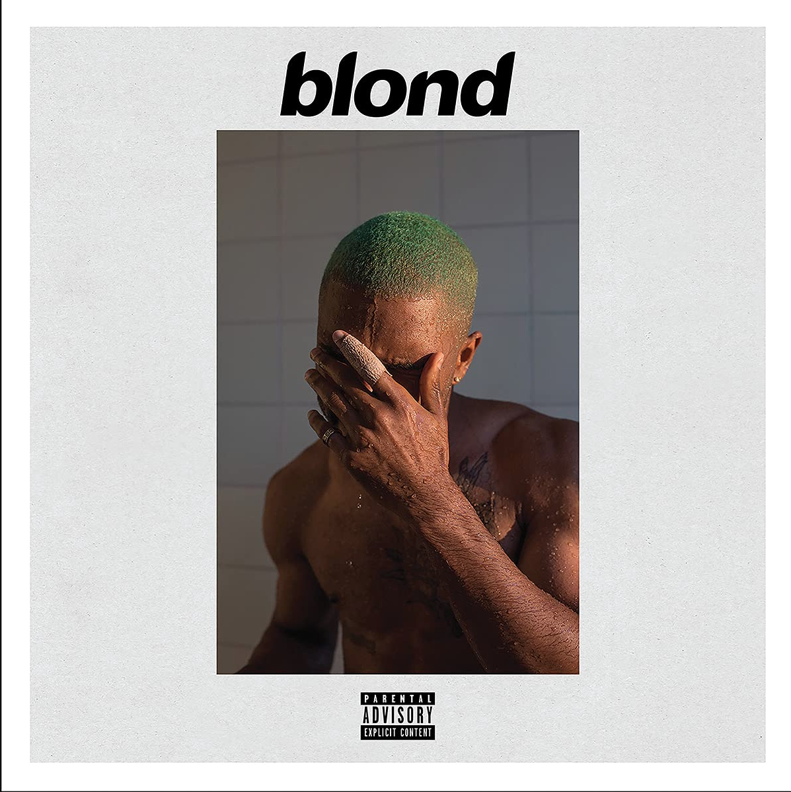
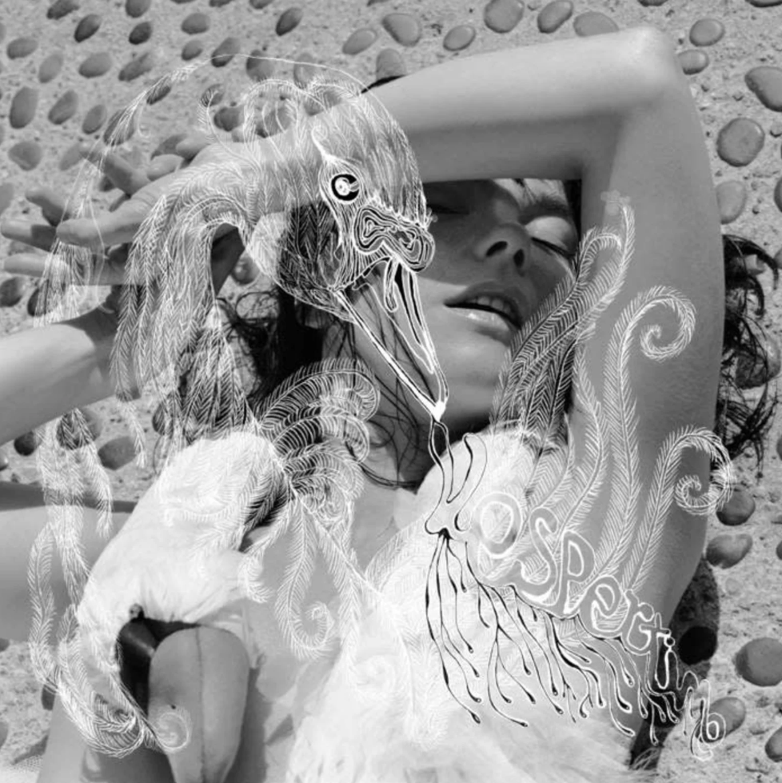
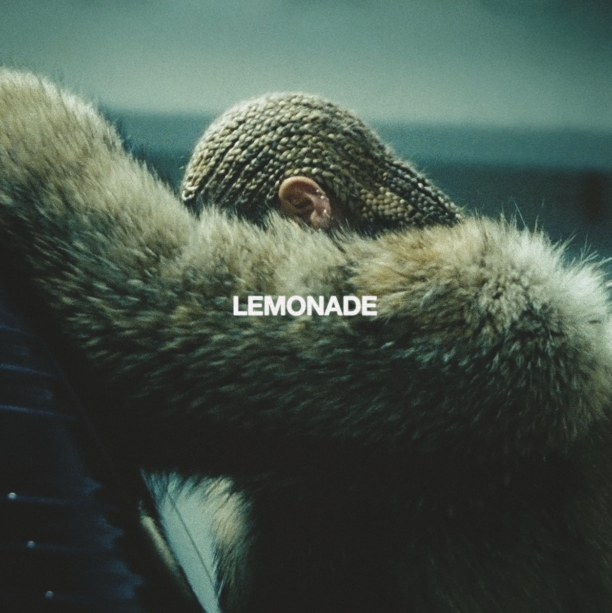
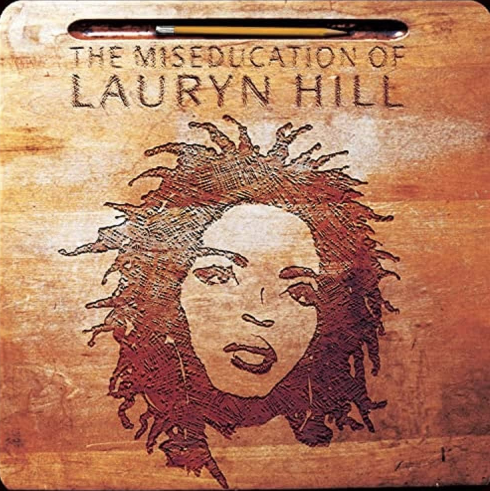
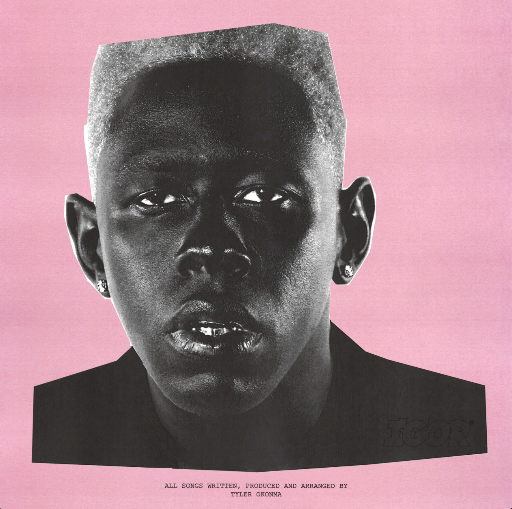
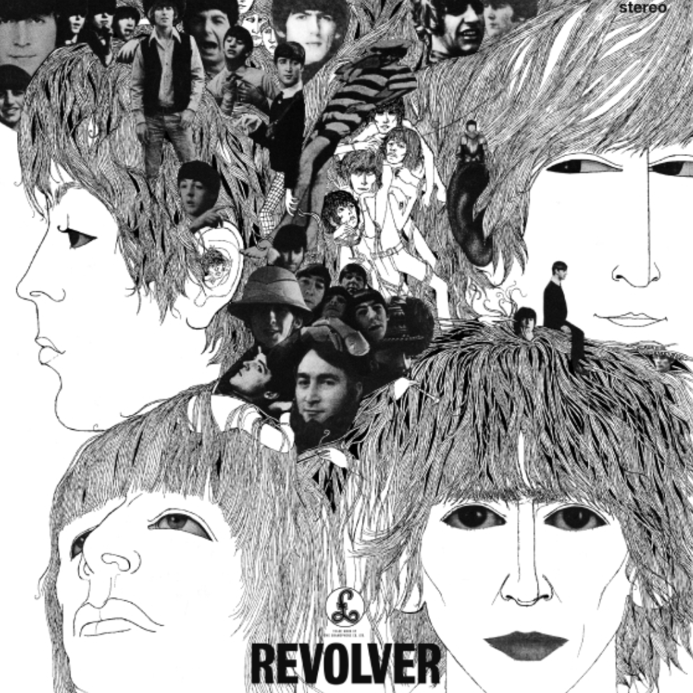

My Personal Top 10 Albums
| Album | Cover Art | Artist | My Review | Listen! |
|---|---|---|---|---|
| 1. Blonde |  |
Frank Ocean | In 2013, it seemed as if Frank Ocean was on the brink of becoming the next big name in pop music. After a grammy winning debut album, a successful North American tour, television appearances and collaborations with major artists such as Beyonce, Jay-Z, and Kanye West, the anticipation was extremely high for the release of his sophomore album. Despite this anticipation, Frank Ocean did something nobody saw coming, he disappeared. For three years, new information about the artist and his upcoming project became a rare occurrence. On August 20, 2016, fans would finally have their answers with the surprise release of Blonde, a 17-track, hour long album. Compared to his previous works, this album was much more personal and introspective. With themes of unrequited love, coming of age, and personal growth, the album feels like a collection of stories from the life of the often elusive artist. My personal favorite tracks on this album are Self Control, White Ferrari, and Seigfreid. This album is always great to listen to when you are feeling vulnerable, lost in thought, or in need of something that validates the quieter, more complex emotions we often keep to ourselves. | Blonde on Spotify |
| 2. Vespertine |  |
Björk | Coming off a successful run of three incredible solo albums in the nineties, Bjork had established herself as one of the most eccentric, innovative and creative artists of her generation. In August 2001, she released Vespertine, an album that traded the bold, confrontational energy of her previous work for something far more intimate: whispered vocals, intricately layered micro-beats, harps, celestes, and an Icelandic choir. The album captures the wide emotional spectrum of new love, the euphoria, vulnerability, obsession and the quiet ache that can exist even in closeness. It feels oddly warm and cold at the same time, offering an often haunting beauty. My personal favorites on this album are Hidden Place, It’s Not Up to You and Aurora. This album is a great listen with some headphones on a cold winter night, allowing you to escape into the world of fragile emotions created on this project. | Vespertine on Spotify |
| 3. Lemonade |  |
Beyonce | Few pop artists have remained in the spotlight for across three decades and managed to continuously innovate and engage culture like Beyonce. Prior to the release of her 2016 project Lemonade, her and her family had been embroiled in a scandal that had the whole world talking. In 2014, a leaked elevator security tape ignited a firestorm of speculation, with rumors of infidelity and marital strife involving her husband, Jay-Z, dominating tabloids and public conversation for months. Despite this speculation, neither Beyonce or Jay would provide a public explanation of the incident for two years. Then, on April 23, 2016, she released Lemonade, a visual album that did what she had never done before: she let the world in. The album takes listeners on a journey through the stages of grief– intuition, denial, anger, apathy, accountability, reformation, forgiveness, resurrection, and hope– as Beyonce processes the unraveling of her marriage and the painstaking work of rebuilding it. In the beginning half of the album, Beyonce is clearly coming from a place of anger and frustration, but begins to take a turn halfway through, when she begins to sing about missing a loved one and starts looking toward a path to forgive them. This album takes the listener on a journey through a wide spectrum of emotions, the rawest and deepest of emotions that everybody can relate to. My favorite tracks on this album are Don’t Hurt Yourself, Sorry, and Sandcastles. This album is best listened to in order, all at once. It is almost like a movie in the sense that it tells a story that should be experienced in one sitting. It is a great listen when you feel lost or betrayed, and are looking for empowerment through music that can transform pain into something unbreakable. | Lemonade on Spotify |
| 4. Ray of Light |  |
Madonna | In the mid-nineties, Madonna found herself at a crossroads. She had been dominating pop music as a provocateur and had gained an extremely loyal following, but also many critics for her affinity for pushing boundaries in many aspects of her self expression. In 1996, the birth of her daughter sparked a profound and personal artistic shift. In February of 1998, she released Ray of Light, a stunning departure that traded her previous era's overt sensuality for introspection, spirituality, and electronic textures. Her and her collaborators crafted a sonic experience that explored themes of motherhood, self-discovery, healing, and spiritual awakening. All filtered through a lens of trip-hop, techno, and ambient soundscapes that still feel futuristic, almost thirty years after its release. My personal favorite tracks on this album are Substitute for Love, Nothing Really Matters, Shanti Ashtangi. This album is a great listen when you are looking for something that will simultaneously make you feel like doing some self reflection and also dancing! | Ray of Light on Spotify |
| 5. The Miseducation of Lauryn Hill |  |
Ms. Lauryn Hill | As a member of the hip-hop group the Fugees in the late nineties, Ms. Lauryn Hill had already made a name for herself with The Score, a multi platinum and grammy award winning album. But behind the scenes, creative differences, financial tensions and a highly publicized breakup with bandmate Wyclef Jean created a whirlwind of personal and professional turmoil, leading to her exit from the group. In August 1998, she released The Miseducation of Lauryn Hill, a groundbreaking album that combined elements of hip-hop, soul, R&B, and reggae. The album chronicles her journey through love, heartbreak and self doubt and her struggles to maintain authenticity in a world that demanded conformity from her. Despite never releasing a follow up to this widely successful project, the legacy of this album has stood the test of time and continues to resonate to millions across the world. This album has been sampled by some of the biggest names in music from Drake to Cardi B, showing the powerful influence this body of work has had on hip-hop culture. My favorite tracks on this album are Lost Ones, Doo Wop and Nothing Even Matters, a collaboration with legendary R&B artist D’Angelo. The range of genres, emotions and energies from songs on this album make it a great listen that speaks to the heart no matter where you are in life. | Lauryn Hill on Spotify |
| 6. Mr. Morale & The Big Steppers |  |
Kendrick Lamar | One thousand, eight hundred and fifty-five days. That is the opening line of Kendrick Lamar's 2022 album Mr. Morale & the Big Steppers. Written in isolation during the throes of the COVID-19 pandemic, the album arrived after a nearly five-year hiatus following Lamar’s critically acclaimed, beloved by fans and Pulitzer Prize-winning album DAMN. His silence left fans hungry for the next chapter from one of the most celebrated voices in hip-hop during the 2010’s. But what Kendrick delivered was not the triumphant, chart-dominating return many expected. Instead, Mr. Morale & the Big Steppers plays out like an hour-long therapy session that is raw and uncomfortable at times, but unflinchingly honest. Over the course of eighteen tracks, he strips away the persona he had cultivated as the culture’s saviour to confront the man underneath. This album touches upon his struggles with fame and savior complex, the wounds of his upbringing, the complexities of his relationship, his own infidelity, the loneliness that comes with being placed on a pedestal, and the weight of parenting while still healing from his own childhood. The album reaches its emotional climax with the track “Mother I sober”, a nearly seven minute long somber meditation where Kendrick confronts the generational trauma passed down through his family, featuring a hauntingly beautiful vocal performance by Beth Gibbons of Portishead. From there, the album closes with the realization that to truly heal, he must stop carrying the weight of the world and focus on carrying the weight of his own emotions. While Mr. Morale & the Big Steppers may not be his most commercially accessible album and is often overlooked in discussions of his discography, it stands as one of my personal favorites for its storytelling, vulnerability and the kind of songwriting ability that proves why Kendric’s lyrical ability is miles ahead of any of his peers. My personal favorites from this album are United in Grief, Rich Spirit, and Mother I Sober. This album is a great listen when you are feeling weighed down by expectations, wishing you could be anybody but yourself. | Mr. Morale & the Big Steppers on Spotify |
| 7. Dummy |  |
Portishead | In the early nineties, singer Beth Gibbons, producer Geoff Barrow and guitarist Adrian Utley came together to form the band Portishead. In 1994, they released their debut album Dummy, which became a landmark in the trip-hop genre. Across eleven tracks, the album unfolds like a black and white film noir translated into sounds, with strings, electronic samples and Gibbons’ tremendous vocals that convey feelings of longing, betrayal, and quiet devastation.This album really captures the claustrophobia of heartbreak, the weight of loneliness, and the exhaustion of wanting something that always seems just out of reach. My personal favorites on this record are Mysterons, Sour Times and Wandering Star. This album is great for a rainy spring day where you are feeling melancholic, introspective and in need of music that wraps your sadness in something beautiful and makes it feel less lonely to carry. | Dummy on Spotify |
| 8. IGOR |  |
Tyler, the Creator | In the early 2010’s, Tyler, the Creator had cultivated a controversial image with a strong, but relatively small, cult audience. As the leader of the Los Angeles based music collective Odd Future, his music was edgy and daring, with a clear throughline of rebellion, youthful angst and a need to defy authority at every turn. Banned from countries, accused of misogyny, homophobia, and inciting violence, Tyler became one of the most polarizing new voices in hip-hop. In 2017, Tyler shocked the world with the release of his album Flower Boy, an album that made a stunning artistic pivot in his discography. On it, Tyler seemed to address his past behavior as a form of overcompensation, a mask worn to conceal inner turmoil with his own sexuality and identity. Having pushed boundaries lyrically and emotionally, both fans and Tyler himself knew he had to push even further artistically with its follow up. In May 2019, he released IGOR, an album so sonically adventurous that it defies genre categorization. Tyler crafted a sprawling, experimental soundscape built from warped samples, lush synths, distorted vocals and a roster of unexpected collaborators, woven into a narrative that is concise yet detailed and emotionally engaging. At its core, this album tells the story of unrequited love framed through the eyes of IGOR, a narrator who is brash, aggressive and prone to emotional volatility, harkening back to Tyler's early persona but filtered through the refinement and self-awareness he had developed on his previous album Flower Boy. The storyline follows his love for someone who is in a relationship, and only reciprocates his love for IGOR in secret, a dynamic that spirals into jealousy and obsession. What makes IGOR so remarkable is how Tyler subverts expectations. Unrequited love is almost always presented in a somber tone, but Tyler cloaks his heartbreak in danceable, upbeat production. Some of my favorite tracks on this album are Running out of Time, Puppet and Are We Still Friends?. This album is always great to listen to when you are feeling the ache of loving someone who makes you question whether the love you feel is real or something you imagined into existence. | IGOR on Spotify |
| 9. Late Registration |  |
Kanye West | Before talking about Late Registration, I think it is important to acknowledge current controversies surrounding the artist Kanye West. My appreciation of this album is purely based on the musical talent on display on this project, and not an endorsement of the harmful beliefs that he has expressed in recent years. The artist who released this album in 2005 is sadly often unrecognizable from the figure who dominates headlines today. Late Registration stands as the second installment in his celebrated college trilogy, arriving in August 2005 as the highly anticipated follow up to his debut album The College Dropout. Where the first album in the trilogy announced Kanye as a unique new voice in hip-hop, Late Registration saw him aiming higher, both sonically and thematically. On this album, Kanye enlisted composer Jon Brion to create lush string arrangements that give the album a cinematic feel, that wonderfully compliment the production done mostly by Kanye himself. The result was an album that felt larger than life while remaining deeply grounded. On this album, he tackled systemic issues like poverty, the crack epidemic's generational toll, and issues with the American healthcare system, Amongst this social commentary, he still found room for the exuberance that fans had come to know him for in songs like “Gold Digger”. The album wonderfully balances joyful moments with those that pack an emotional punch. Among these, none land harder than “Hey Mama”, a love letter to his mother, Donda West, that stands as one of the most heartfelt songs in his catalogue. Donda had been a cementing force in his life, an English professor who nurtured his confidence and served as an emotional anchor behind his early work, and a defining force in his musical output as a whole. Her sudden death in 2007 would become a defining tragedy in his life, a loss from which his public unraveling can be traced, making the songs like on this record land even harder in retrospect. Across this album, Kanye entered the creative process with a clear goal: to elevate his writing. Every line feels meticulously crafted and it is clear that this album was made by a once in a generation artist who was at the peak of his creative prowess. My personal favorites on this album are Touch the Sky, Drive Slow and Diamonds From Sierra Leone. This album is a great listen when you need a confidence boost from music that balances celebration with substance. | Late Registration on Spotify |
| 10. Revolver |  |
The Beatles | By 1966, The Beatles had already taken over the world. Emerging from the Beatlemania craze as the most famous musicians on the planet, they had transformed the face of pop music. Their immense fame had also come with exhaustion, and the pressure of being at the centre of pop culture had left the band in search of something deeper. In August 1966, just days before their final proper concert together, they released Revolver, an album that signaled a departure from their previous work. While their earlier records were built for touring and performing, Revolver was made for the studio. It is an intricate collage that pushed the boundaries of what pop music could be. What made Revolver so revolutionary was not just its technical innovation, but the way it expanded the emotional and thematic range of popular music. The album touched on loneliness, alienation, existential longing, and spiritual exploration, all wrapped in melodies that felt both timeless and entirely new. My personal favorites on this album are Eleanor Rigby, Here There and Everywhere and For No One. This music is always a great listen when you are looking for a timeless classic. | Revolver on Spotify |